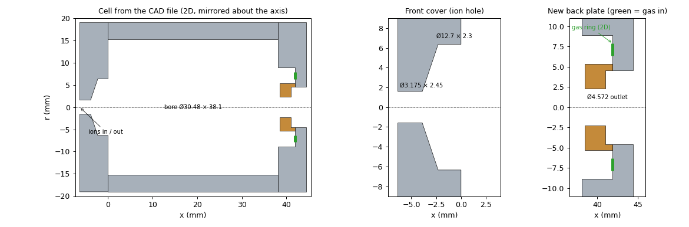

All sizes are read from Neutralizing_cell_new_inlet.step (mm). Ions enter and leave on the left, through the
output cover's Ø3.175 hole; the new back plate is on the right. x = 0 is the inner face of the front cover.

| Part | mm | Before (last scan) |
|---|---|---|
| Front (ion) hole | Ø3.175 × 2.45, then a cone to Ø12.7 (1.6 long), then a Ø12.7 × 2.3 counterbore | Ø5 × 1.2 behind a Ø20 × 6.4 counterbore |
| Front cover | 6.35 thick | 7.6 |
| Bore | Ø30.48 × 38.1 | Ø30.48 × 45.47 |
| Back plate | unchanged: Ø4.572 × 2.54 outlet in the insert, gas ring at the floor of the gap (r 6.35–7.87) | |
Left out in 2D (all closed pockets, so gas cannot leave through them; together they hold about 23% as much volume as the bore): a Ø30.48 window pocket on one side (about 3.8 deep, closed by a cover), a 30.5 × 7.6 slot under the top window, and a 30.5 × 7.6 × 4.3 pocket on the bottom closed by the target holder.